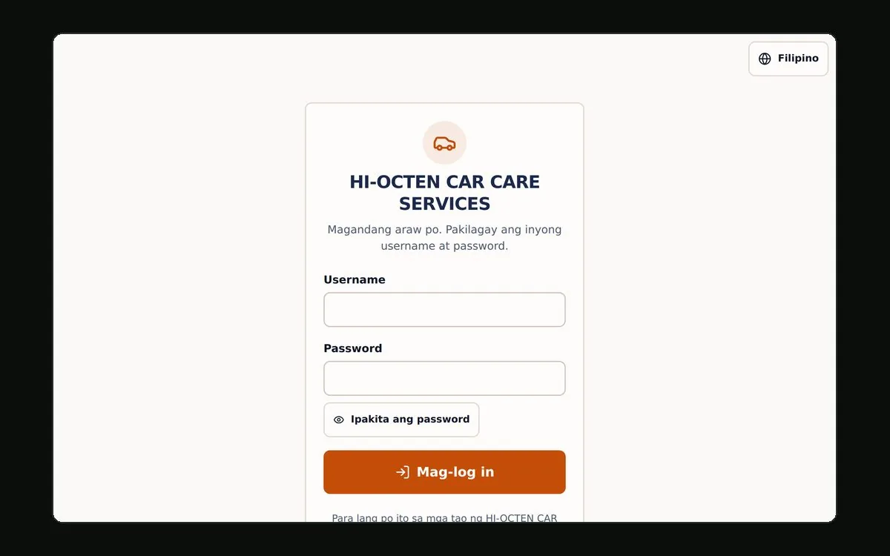

autocare/
A job-management system for HI-OCTEN CAR CARE SERVICES. It is built to take over from the shop's paper notebook: seven short screens to record a finished job, a total the owner cannot mistype, and a printable receipt for every one.

“This is a good system for my talyer.”
Totals added by hand, in front of the customer
The shop recorded every job in a notebook: the customer, the car, the parts, the labour, what was paid. Totals were added by hand at the counter, in front of the customer, which is exactly when arithmetic goes wrong. Nobody could answer "how much did we make last month" without turning pages, and a lost notebook meant a lost year.
Seven screens, one decision each
The system is shaped around the one screen the owner will use most, Record New Job. It runs as a seven-step wizard with a single decision on each screen, because a twenty-field form on a phone at a busy counter is a form that gets filled in wrong.
- Home shows today's jobs and income, this month's income, the unpaid total, and one very large button.
- Jobs lets you search and filter every job, then print or download its receipt as a PDF.
- Customers and vehicles holds people, their cars, and a full service history.
- Reports covers daily and monthly income, most-used spare parts, top customers, and CSV or JSON backup.
- Users, settings and the activity log handle staff accounts, receipt details, and a record of every login and every change.
One file computes every peso
Every peso in the system runs through one file, lib/calc.ts. The
browser imports it to render the live total. The server imports the same function
to compute what it stores. They cannot disagree.
Two rules are enforced rather than merely intended. The total is never an input:
in the interface it is rendered text, not a form field. And the server does not
trust the client. The validation schema will not even accept
subtotal, total, balance or
status, so a client that posts them has them dropped and the server
recomputes everything from the line items. A test fails if that stops being true.
That file, computing in this page
Change any number below. The totals are computed by a port of
lib/calc.ts, the same function the shop's browser and the shop's
server both run. It was checked against the original over 2,000 generated cases,
every field compared, with no disagreements. Nothing is sent anywhere: the
arithmetic happens in your browser, and window.autocareCalc is there
if you would rather poke at it from the console.
The first line is the one worth watching. Ten lots of 0.07 added the
way a spreadsheet or a hand-rolled loop would add them comes to
0.7000000000000002, and the parts figure
above says ₱286.20 anyway. That gap is the whole reason the money is kept in
whole centavos. Set the quantity to 4 or 8 and the naive sum lands exactly; at 3,
5 or 10 it does not. The quantities that survive are the powers of two, which is
not something anybody should need to know in order to run a car shop.
What stands between a request and the till
- bcrypt at cost 12, a real password policy, lockout after five failed logins, and a rate limit on the login route.
- JWT sessions in httpOnly, secure, sameSite cookies with a 30-minute idle timeout, re-checked against the database on every request. Disabling an account logs it out immediately rather than in half an hour.
- Role-based access enforced in middleware and checked again inside every server action, because a request can always be aimed straight at an endpoint.
- A per-request nonce-based Content-Security-Policy with no
unsafe-inline, generated in middleware in exactly one place. - Deletes go to a recoverable Trash, and every change lands in an audit log.
Two languages, and what version one leaves out
The interface ships in English and Filipino, switchable per user. The people running the shop think in Filipino, and a translation stops being a nice extra when the app is somebody's till. Receipts render to PDF in the browser. Continuous integration runs lint, typecheck, unit tests, a migration, a seed, database-backed integrity and access-control tests, and a production build on every push.
Public sign-up, online payments, SMS and multi-branch support are all absent from version one. The schema leaves room for each of them, with notes on where they would go.